|
You can model every tiny texture detail of a world using a vast number of colored faces, but this is time consuming and difficult.
Use a trick instead: take a picture of the real thing, then paste that picture on the shape, like sticking on a decal image.
Specify the texture using an ImageTexture, PixelTexture, or MovieTexture node within an Appearance node.
Color textures override material, grayscale textures multiply against the color values.
Textures with transparency create holes that can be seen through.
These X3D scenes are adapted directly from the
original VRML 2.0 Sourcebook chapter examples.
Also available:
Introduction to VRML97 SIGGRAPH98 course notes.
|
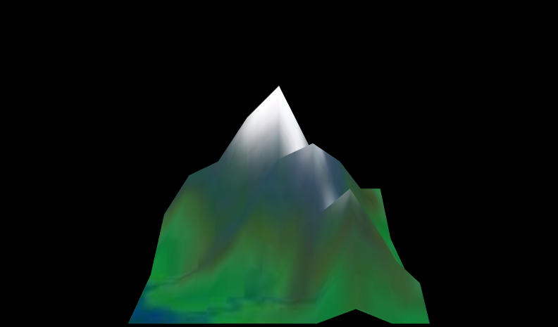
|
![[1] Figure17.04aTextureBoxTest.x3d - Texture test on a basic shape](_viewpoints/Figure17.04aTextureBoxTest.x3d._VP_Texture_test_on_a_basic_shape.png){kind=link}
![[2] Figure17.04aTextureBoxTest.x3d - (default X3D view from 0 0 10)](_viewpoints/Figure17.04aTextureBoxTest.x3d._VP_Default_viewpoint.png){kind=link}
![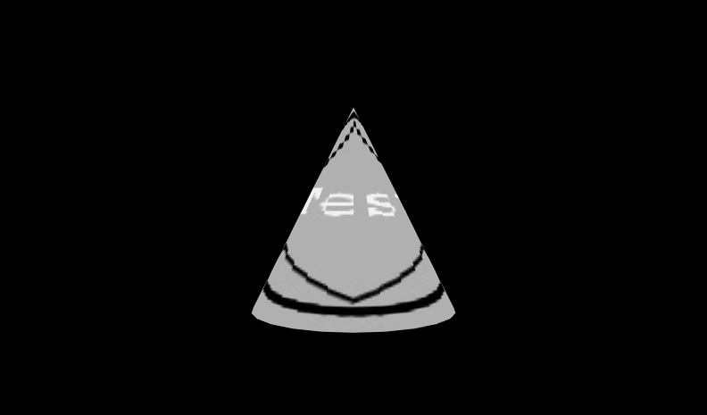[3] Figure17.04bTextureConeTest.x3d - Texture test on a basic shape](_viewpoints/Figure17.04bTextureConeTest.x3d._VP_Texture_test_on_a_basic_shape.png){kind=link}
![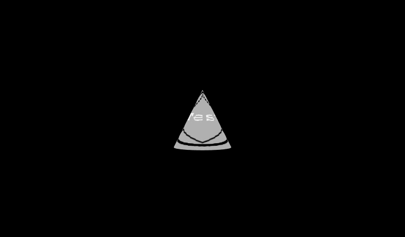[4] Figure17.04bTextureConeTest.x3d - (default X3D view from 0 0 10)](_viewpoints/Figure17.04bTextureConeTest.x3d._VP_Default_viewpoint.png){kind=link}
![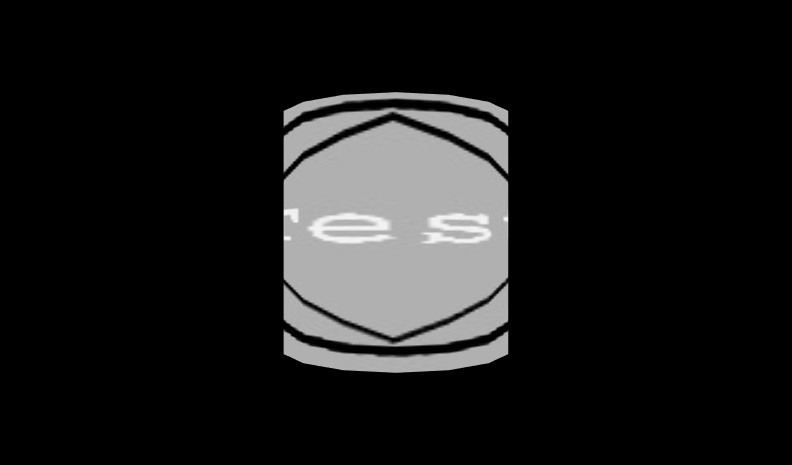[5] Figure17.04cTextureCylinderTest.x3d - Texture test on a basic shape](_viewpoints/Figure17.04cTextureCylinderTest.x3d._VP_Texture_test_on_a_basic_shape.png){kind=link}
![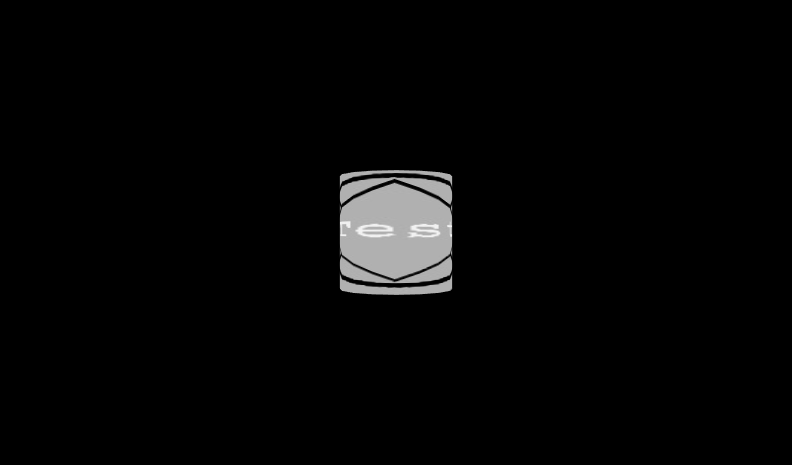[6] Figure17.04cTextureCylinderTest.x3d - (default X3D view from 0 0 10)](_viewpoints/Figure17.04cTextureCylinderTest.x3d._VP_Default_viewpoint.png){kind=link}
![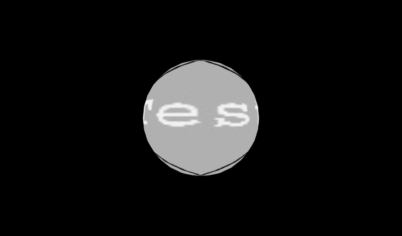[7] Figure17.04dTextureSphereTest.x3d - Texture test on a basic shape](_viewpoints/Figure17.04dTextureSphereTest.x3d._VP_Texture_test_on_a_basic_shape.png){kind=link}
![[8] Figure17.04dTextureSphereTest.x3d - (default X3D view from 0 0 10)](_viewpoints/Figure17.04dTextureSphereTest.x3d._VP_Default_viewpoint.png){kind=link}
![[9] Figure17.05dTexturedSodaCan.x3d - Soda can with multiple textures](_viewpoints/Figure17.05dTexturedSodaCan.x3d._VP_Soda_can_with_multiple_textures.png){kind=link}
![[10] Figure17.05dTexturedSodaCan.x3d - (default X3D view from 0 0 10)](_viewpoints/Figure17.05dTexturedSodaCan.x3d._VP_Default_viewpoint.png){kind=link}
![[11] Figure17.06bTexturedText.x3d - Text texture test](_viewpoints/Figure17.06bTexturedText.x3d._VP_Text_texture_test.png){kind=link}
![[12] Figure17.06bTexturedText.x3d - (default X3D view from 0 0 10)](_viewpoints/Figure17.06bTexturedText.x3d._VP_Default_viewpoint.png){kind=link}
![[13] Figure17.07bTexturedLightningBolt.x3d - Textured lightning bolt](_viewpoints/Figure17.07bTexturedLightningBolt.x3d._VP_Textured_lightning_bolt.png){kind=link}
![[14] Figure17.07bTexturedLightningBolt.x3d - (default X3D view from 0 0 10)](_viewpoints/Figure17.07bTexturedLightningBolt.x3d._VP_Default_viewpoint.png){kind=link}
![[15] Figure17.08bTexturedElevationGridMountain.x3d - Textured mountain](_viewpoints/Figure17.08bTexturedElevationGridMountain.x3d._VP_Textured_mountain.png){kind=link}
![[16] Figure17.08bTexturedElevationGridMountain.x3d - (default X3D view)](_viewpoints/Figure17.08bTexturedElevationGridMountain.x3d._VP_Default_viewpoint.png){kind=link}
![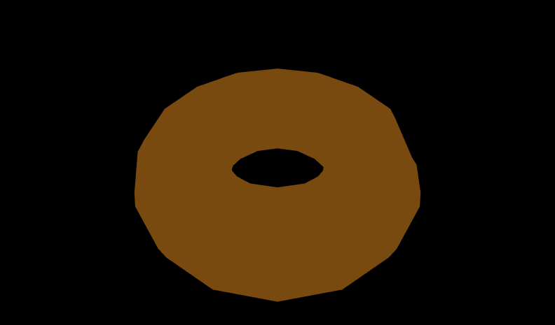[17] Figure17.09bTexturedDonutTorusExtrusion.x3d - Yum yum, textured icing on an extursion-torus donut. With chocolate and sprinkles.](_viewpoints/Figure17.09bTexturedDonutTorusExtrusion.x3d._VP_Yum_yum,_textured_icing_on_an_extursion-torus_donut._With_chocolate_and_sprinkles..png){kind=link}
![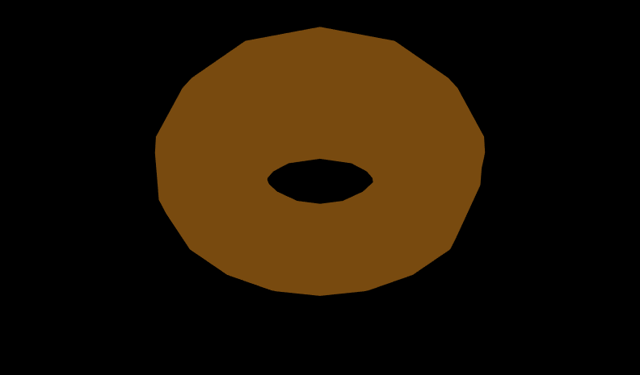[18] Figure17.09bTexturedDonutTorusExtrusion.x3d - Looking up from below](_viewpoints/Figure17.09bTexturedDonutTorusExtrusion.x3d._VP_Looking_up_from_below.png){kind=link}
![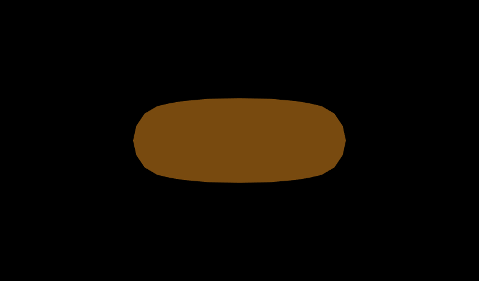[19] Figure17.09bTexturedDonutTorusExtrusion.x3d - (default X3D view)](_viewpoints/Figure17.09bTexturedDonutTorusExtrusion.x3d._VP_Default_viewpoint.png){kind=link}
![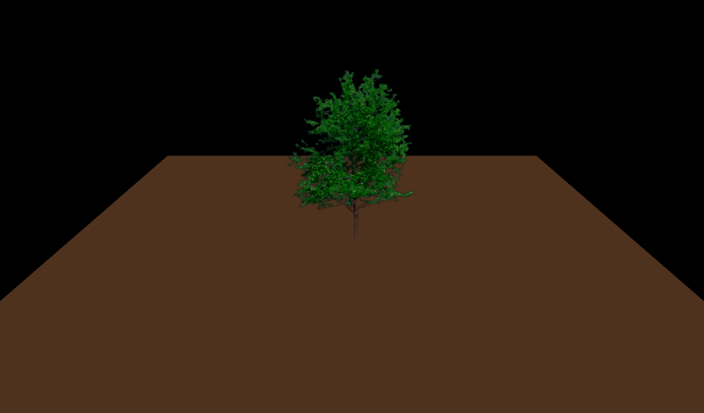[20] Figure17.10cTextureTransparencyTree.x3d - Tree view](_viewpoints/Figure17.10cTextureTransparencyTree.x3d._VP_Tree_view.png){kind=link}
![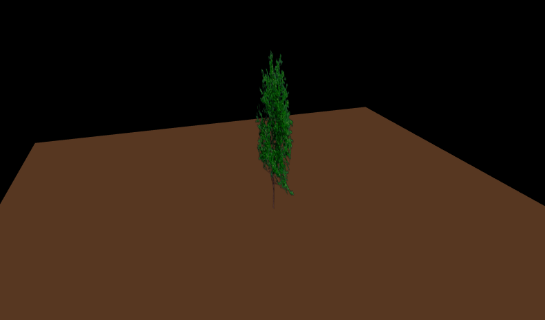[21] Figure17.10cTextureTransparencyTree.x3d - Side view (no billboarding)](_viewpoints/Figure17.10cTextureTransparencyTree.x3d._VP_Side_view_(no_billboarding).png){kind=link}
![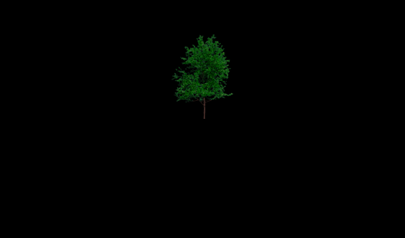[22] Figure17.10cTextureTransparencyTree.x3d - (default X3D view)](_viewpoints/Figure17.10cTextureTransparencyTree.x3d._VP_Default_viewpoint.png){kind=link}
![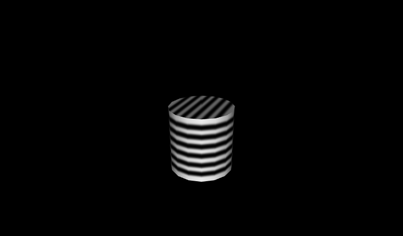[23] Figure17.11bGreyTextureGreenMaterialStripedCylinder.x3d - Cylinder view note interactions of greyscale texture and green emissiveColor material](_viewpoints/Figure17.11bGreyTextureGreenMaterialStripedCylinder.x3d._VP_Cylinder_view_note_interactions_of_greyscale_texture_and_green_emissiveColor_material.png){kind=link}
![[24] Figure17.11bGreyTextureGreenMaterialStripedCylinder.x3d -](_viewpoints/Figure17.11bGreyTextureGreenMaterialStripedCylinder.x3d._VP_Default_viewpoint.png){kind=link}
![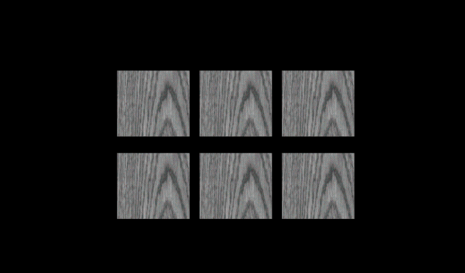[25] Figure17.12bWoodTextures.x3d - Wood greyscale texture with different colors](_viewpoints/Figure17.12bWoodTextures.x3d._VP_Wood_greyscale_texture_with_different_colors.png){kind=link}
![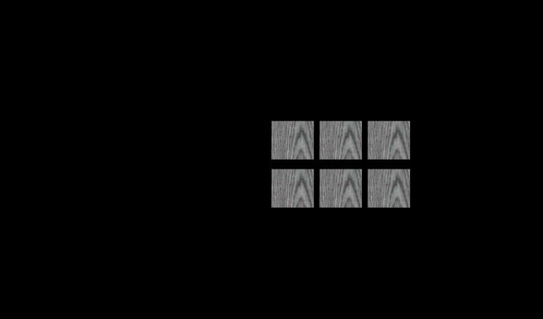[26] Figure17.12bWoodTextures.x3d - (default X3D view from 0 0 10)](_viewpoints/Figure17.12bWoodTextures.x3d._VP_Default_viewpoint.png){kind=link}
![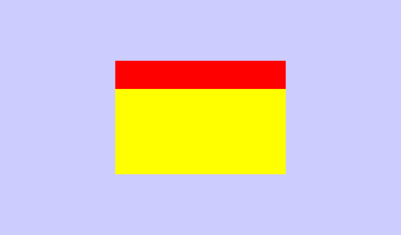[27] Figure17.13SimplePixelTexture.x3d - PixelTexture](_viewpoints/Figure17.13SimplePixelTexture.x3d._VP_PixelTexture.png){kind=link}
![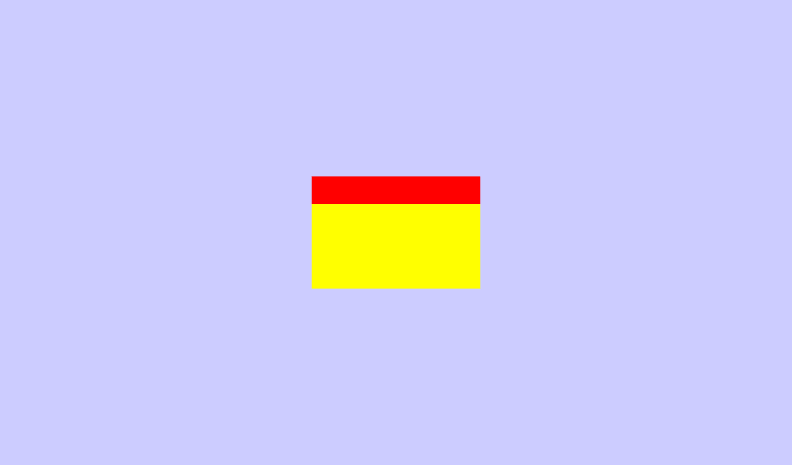[28] Figure17.13SimplePixelTexture.x3d - (default X3D view from 0 0 10)](_viewpoints/Figure17.13SimplePixelTexture.x3d._VP_Default_viewpoint.png){kind=link}
![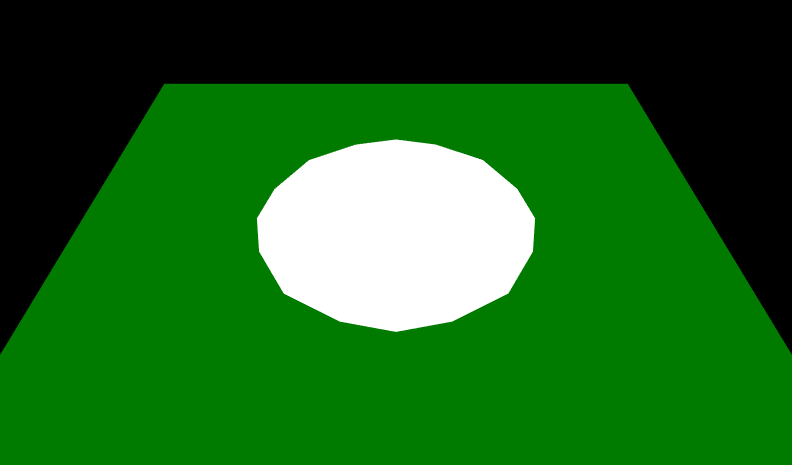[29] Figure17.14bMovieTextureWhirlpool.x3d - MovieTexture whirlpool](_viewpoints/Figure17.14bMovieTextureWhirlpool.x3d._VP_MovieTexture_whirlpool.png){kind=link}
![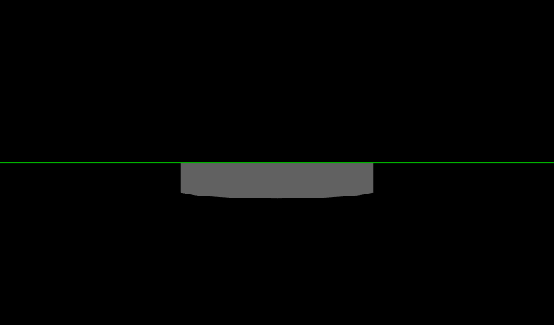[30] Figure17.14bMovieTextureWhirlpool.x3d - (default X3D view from 0 0 10)](_viewpoints/Figure17.14bMovieTextureWhirlpool.x3d._VP_Default_viewpoint.png){kind=link}